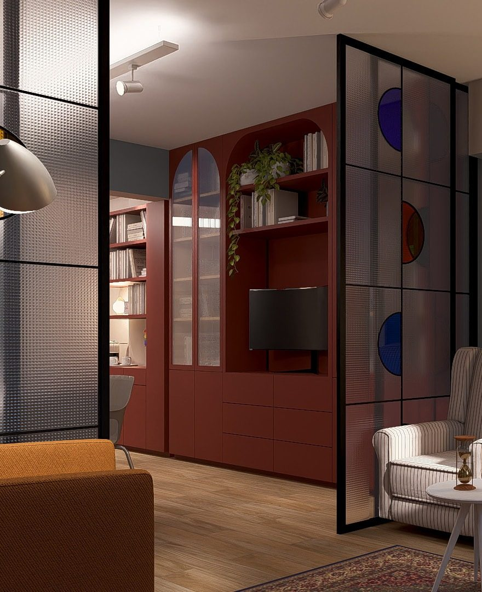

Um espaço de Aline Accioly
Escrita
Corpo Falante
Ler, escrever, enodar.

Uma clínica da letra
Clínica psicanalítica
Na análise, fala-se. E naquilo que se diz há marcas que pedem leitura. Aos poucos, cada um aprende a ler as suas, e algo passa a se escrever de outro modo.
Análise para adultos · Presencial em Uberlândia · Online para outros estados e países
Conhecer a clínicaEscrita
Livros, capítulos e artigos
-
Por falar em corpo, corpo por falar
Organização, com Cirlana Rodrigues de Souza e Germano Almeida · Coleção Escritos Abertos II · Hæresis, 2025
-
Em que língua se conta de uma análise?
Organização · Coleção Escritos Abertos · Hæresis, 2024
-
Psicanálise e Psicopatologia lacaniana: …a partir de quando se está louco?
Com Eliene Boaventura, Ângela Vorcaro e Márcia Rosa · Scriptum, 2023
-
Passagens em caso: de'formações d'alíngua na escrita
Tese de doutorado · UFMG, 2023
Ensino e Transmissão
Supervisão, orientação e cursos

Supervisão clínica e orientação de escrita ao longo de todo o ano. Cursos e seminários retornam em 2027.
Ver atividadesSobre
Aline Accioly é psicanalista, doutora em Estudos Psicanalíticos pela UFMG e mestre em Psicologia pela UFU. É membro-fundadora da Hæresis — Associação de Psicanálise, em Uberlândia, que presidiu até 2025; hoje integra seu Conselho e sua Comissão Editorial e coordena a Coleção Escritos Abertos. É membro do Outrarte, onde integra o Ler (in)com'um.
Para agendar uma primeira sessão
Edifício Metropolitan
Av. Getúlio Vargas, 275, sala 708
Centro, Uberlândia/MG